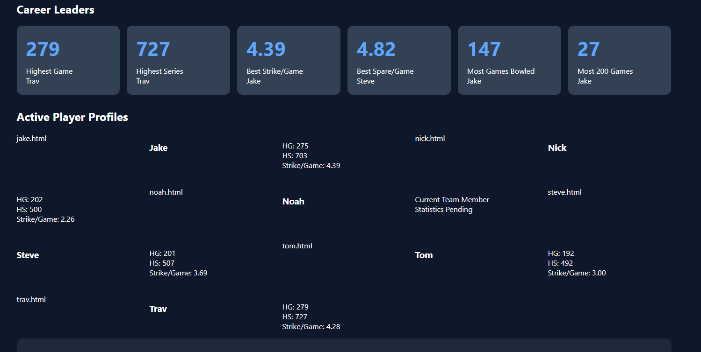

Strike rates, spare rates, games bowled and LaneTalk analytics.
Weekly game scores from LaneTalk recaps.
| Player | Game 1 | Game 2 | Game 3 | Series | High game |
|---|---|---|---|---|---|
| Steve | 171 | 174 | 163 | 508 | 174 |
| Nick | 99 | 98 | 125 | 322 | 125 |
| Tom | 144 | 116 | 101 | 361 | 144 |
| Player | Game 1 | Game 2 | Game 3 | Series | High game |
|---|---|---|---|---|---|
| Jake | 209 | 156 | 158 | 523 | 209 |
| Noah | 222 | 225 | 222 | 669 | 225 |
| Trav | 173 | 190 | 138 | 501 | 190 |
| Player | Game 1 | Game 2 | Game 3 | Series | High game |
|---|---|---|---|---|---|
| Noah | 245 | 225 | 189 | 659 | 245 |
| Nick | 162 | 182 | 167 | 511 | 182 |
| Steve | 178 | 168 | 157 | 503 | 178 |
Season-to-date report through 10/22/26.
| Player | Avg | Strikes/Game | Spares/Game | Open Frames/Game | Split Conversions |
|---|---|---|---|---|---|
| Jake | 171 | 4.33 | 2.67 | 3.33 | 6-pin 1 (0%); 7-pin 3 (0%) |
| Nick | 141 | 2.89 | 2.56 | 4.78 | 6-pin 2 (50%); 7-pin 3 (0%) |
| Steve | 149 | 2.78 | 3.89 | 3.56 | 6-pin 2 (0%); 7-pin 3 (33%) |
| Tom | 142 | 2.67 | 2.33 | 5.00 | 5-pin 1 (0%); 6-pin 1 (0%); 7-pin 1 (0%) |
| Trav | 166 | 4.50 | 2.33 | 3.33 | 6-pin 3 (33%); 7-pin 2 (0%) |
| Noah | 221 | 6.33 | 3.17 | 1.00 | 7-pin 1 (0%) |
Reading note: Exact pin identities from the lane diagrams are approximate. First-ball leave counts and convert/miss outcomes are based on roll notation and are reliable. For Jake and Tom, who are left-handed, corner-pin terminology must account for handedness: the far corner is the 10-pin for a left-hander (and the 7-pin for a right-hander). Specific pin identities remain approximate unless clearly supported by the diagram.
| Player | Game / frame | Roll sequence | Standing after ball 1 | Result |
|---|---|---|---|---|
| Steve | G1 F1 | 1–8 | 9 | Open |
| Steve | G1 F2 | 7–1 | 3 | Open |
| Steve | G1 F3 | 7/ | 3 | Spare |
| Steve | G1 F4 | 7/ | 3 | Spare |
| Steve | G1 F6 | 9/ | 1 | Spare |
| Steve | G1 F7 | 7/ | 3 | Spare |
| Steve | G1 F9 | 1/ | 9 | Spare |
| Steve | G1 F10 | X, 8/ | 0 | Spare |
| Steve | G2 F1 | 9– | 1 | Open |
| Steve | G2 F5 | 8/ | 2 | Spare |
| Steve | G2 F6 | 9/ | 1 | Spare |
| Steve | G2 F7 | 6/ | 4 | Spare |
| Steve | G2 F9 | 7–1 | 3 | Open |
| Steve | G2 F10 | 7–2 | 3 | Open |
| Steve | G3 F1 | 7/ | 3 | Spare |
| Steve | G3 F2 | 7/ | 3 | Spare |
| Steve | G3 F3 | 7/ | 3 | Spare |
| Steve | G3 F5 | 7/ | 3 | Spare |
| Steve | G3 F6 | 9/ | 1 | Spare |
| Steve | G3 F7 | 7/ | 3 | Spare |
| Steve | G3 F8 | 7–1 | 3 | Open |
| Steve | G3 F10 | 6–3 | 4 | Open |
| Nick | G1 F1 | 8–1 | 2 | Open |
| Nick | G1 F2 | 5–1 | 5 | Open |
| Nick | G1 F3 | 7– | 3 | Open |
| Nick | G1 F4 | 7/ | 3 | Spare |
| Nick | G1 F5 | –8 | 10 | Open |
| Nick | G1 F6 | 7– | 3 | Open |
| Nick | G1 F7 | 7–2 | 3 | Open |
| Nick | G1 F8 | 7– | 3 | Open |
| Nick | G1 F10 | 8/6 | 2 | Spare |
| Nick | G2 F1 | 9– | 1 | Open |
| Nick | G2 F2 | 7–1 | 3 | Open |
| Nick | G2 F3 | 5/ | 5 | Spare |
| Nick | G2 F4 | 7–2 | 3 | Open |
| Nick | G2 F5 | 6–2 | 4 | Open |
| Nick | G2 F6 | 8– | 2 | Open |
| Nick | G2 F7 | 9– | 1 | Open |
| Nick | G2 F8 | 8– | 2 | Open |
| Nick | G2 F9 | 8/ | 2 | Spare |
| Nick | G2 F10 | 5–2 | 5 | Open |
| Nick | G3 F1 | 9/ | 1 | Spare |
| Nick | G3 F3 | 8– | 2 | Open |
| Nick | G3 F4 | 7/ | 3 | Spare |
| Nick | G3 F5 | 8–1 | 2 | Open |
| Nick | G3 F6 | 9– | 1 | Open |
| Nick | G3 F7 | 8– | 2 | Open |
| Nick | G3 F8 | 8– | 2 | Open |
| Nick | G3 F9 | 8– | 2 | Open |
| Nick | G3 F10 | 7/9 | 3 | Spare |
| Tom | G1 F1 | 9/ | 1 | Spare |
| Tom | G1 F2 | 6–3 | 4 | Open |
| Tom | G1 F3 | 9– | 1 | Open |
| Tom | G1 F4 | 9/ | 1 | Spare |
| Tom | G1 F5 | 9/ | 1 | Spare |
| Tom | G1 F6 | 9/ | 1 | Spare |
| Tom | G1 F7 | 8– | 2 | Open |
| Tom | G1 F8 | 7/ | 3 | Spare |
| Tom | G1 F10 | 8– | 2 | Open |
| Tom | G2 F1 | 8/ | 2 | Spare |
| Tom | G2 F2 | 6–2 | 4 | Open |
| Tom | G2 F3 | 3–6 | 7 | Open |
| Tom | G2 F4 | 8– | 2 | Open |
| Tom | G2 F6 | 9/ | 1 | Spare |
| Tom | G2 F7 | 6–3 | 4 | Open |
| Tom | G2 F8 | 9– | 1 | Open |
| Tom | G2 F9 | 6/ | 4 | Spare |
| Tom | G2 F10 | 5–1 | 5 | Open |
| Tom | G3 F1 | 7– | 3 | Open |
| Tom | G3 F2 | 1–5 | 9 | Open |
| Tom | G3 F3 | 8/ | 2 | Spare |
| Tom | G3 F4 | 7/ | 3 | Spare |
| Tom | G3 F5 | 5–4 | 5 | Open |
| Tom | G3 F6 | 8–1 | 2 | Open |
| Tom | G3 F7 | 8– | 2 | Open |
| Tom | G3 F8 | 9/ | 1 | Spare |
| Tom | G3 F9 | 7– | 3 | Open |
| Tom | G3 F10 | 6– | 4 | Open |
Steve: 15 converted, 7 open; misses were on ball 2 in 7 open leave(s) (open frames: G1F1, G1F2, G2F1, G2F9, G2F10, G3F8, G3F10).
Nick: 7 converted, 21 open; misses were on ball 2 in 21 open leave(s) (open frames: G1F1, G1F2, G1F3, G1F5, G1F6, G1F7, G1F8, G2F1, G2F2, G2F4, G2F5, G2F6, G2F7, G2F8, G2F10, G3F3, G3F5, G3F6, G3F7, G3F8, G3F9).
Tom: 11 converted, 17 open; misses were on ball 2 in 17 open leave(s) (open frames: G1F2, G1F3, G1F7, G1F10, G2F2, G2F3, G2F4, G2F7, G2F8, G2F10, G3F1, G3F2, G3F5, G3F6, G3F7, G3F9, G3F10).
| Player | Game / frame | Roll sequence | Standing after ball 1 | Result |
|---|---|---|---|---|
| Jake | G1 F4 | 8/ | 2 | Spare |
| Jake | G1 F6 | 9/ | 1 | Spare |
| Jake | G1 F7 | 6– | 4 | Open |
| Jake | G1 F8 | 5/ | 5 | Spare |
| Jake | G2 F1 | 7–1 | 3 | Open |
| Jake | G2 F2 | 7–1 | 3 | Open |
| Jake | G2 F3 | 7– | 3 | Open |
| Jake | G2 F5 | 9– | 1 | Open |
| Jake | G2 F9 | 9/ | 1 | Spare |
| Jake | G2 F10 | 8– | 2 | Open |
| Jake | G3 F2 | 9/ | 1 | Spare |
| Jake | G3 F5 | 8–1 | 2 | Open |
| Jake | G3 F7 | 8–1 | 2 | Open |
| Jake | G3 F8 | 6– | 4 | Open |
| Jake | G3 F10 | 8–1 | 2 | Open |
| Noah | G1 F2 | 7/ | 3 | Spare |
| Noah | G1 F3 | 8/ | 2 | Spare |
| Noah | G1 F6 | 9/ | 1 | Spare |
| Noah | G1 F7 | 9– | 1 | Open |
| Noah | G1 F10 | X,X,7 | 0 | Open |
| Noah | G2 F1 | 9/ | 1 | Spare |
| Noah | G2 F3 | 9– | 1 | Open |
| Noah | G2 F8 | 9/ | 1 | Spare |
| Noah | G2 F9 | 9/ | 1 | Spare |
| Noah | G2 F10 | X,X,9 | 0 | Open |
| Noah | G3 F6 | 9/ | 1 | Spare |
| Noah | G3 F8 | 7/ | 3 | Spare |
| Noah | G3 F9 | 6/ | 4 | Spare |
| Noah | G3 F10 | 8–1 | 2 | Open |
| Trav | G1 F2 | 7–2 | 3 | Open |
| Trav | G1 F3 | 6–2 | 4 | Open |
| Trav | G1 F4 | 9/ | 1 | Spare |
| Trav | G1 F6 | 7/ | 3 | Spare |
| Trav | G1 F9 | 9/ | 1 | Spare |
| Trav | G1 F10 | 9– | 1 | Open |
| Trav | G2 F1 | 9/ | 1 | Spare |
| Trav | G2 F4 | 6/ | 4 | Spare |
| Trav | G2 F6 | 9/ | 1 | Spare |
| Trav | G2 F8 | 9– | 1 | Open |
| Trav | G2 F9 | 9– | 1 | Open |
| Trav | G2 F10 | X,X,7 | 0 | Open |
| Trav | G3 F1 | 8– | 2 | Open |
| Trav | G3 F3 | –8 | 10 | Open |
| Trav | G3 F4 | –8 | 10 | Open |
| Trav | G3 F6 | 8/ | 2 | Spare |
| Trav | G3 F8 | 8–1 | 2 | Open |
| Trav | G3 F10 | 9– | 1 | Open |
Jake: 5 converted, 10 open; misses were on ball 2 in 10 open leave(s) (open frames: G1F7, G2F1, G2F2, G2F3, G2F5, G2F10, G3F5, G3F7, G3F8, G3F10).
Noah: 9 converted, 5 open; misses were on ball 2 in 5 open leave(s) (open frames: G1F7, G1F10, G2F3, G2F10, G3F10).
Trav: 7 converted, 11 open; misses were on ball 2 in 11 open leave(s) (open frames: G1F2, G1F3, G1F10, G2F8, G2F9, G2F10, G3F1, G3F3, G3F4, G3F8, G3F10).
| Player | Game / frame | Roll sequence | Standing after ball 1 | Result |
|---|---|---|---|---|
| Steve | G1 F1 | 9/ | 1 | Spare |
| Steve | G1 F4 | 7–2 | 3 | Open |
| Steve | G1 F5 | 9– | 1 | Open |
| Steve | G1 F7 | 9/ | 1 | Spare |
| Steve | G1 F8 | 6–3 | 4 | Open |
| Steve | G1 F10 | X,9/ | 0 | Spare |
| Steve | G2 F1 | 6/ | 4 | Spare |
| Steve | G2 F4 | 3–5 | 7 | Open |
| Steve | G2 F5 | 9/ | 1 | Spare |
| Steve | G2 F6 | 9– | 1 | Open |
| Steve | G2 F9 | 6/ | 4 | Spare |
| Steve | G2 F10 | 6–3 | 4 | Open |
| Steve | G3 F1 | 7–1 | 3 | Open |
| Steve | G3 F2 | 5/ | 5 | Spare |
| Steve | G3 F3 | 7–2 | 3 | Open |
| Steve | G3 F6 | 9– | 1 | Open |
| Steve | G3 F7 | 7–2 | 3 | Open |
| Steve | G3 F8 | 9/ | 1 | Spare |
| Steve | G3 F9 | 9/ | 1 | Spare |
| Steve | G3 F10 | 9/,9/ | 1 | Spare |
| Nick | G1 F1 | 9– | 1 | Open |
| Nick | G1 F2 | 9/ | 1 | Spare |
| Nick | G1 F4 | 6–2 | 4 | Open |
| Nick | G1 F5 | 9/ | 1 | Spare |
| Nick | G1 F9 | 6–3 | 4 | Open |
| Nick | G1 F10 | 7/,1 | 3 | Spare |
| Nick | G2 F2 | 6–1 | 4 | Open |
| Nick | G2 F6 | 8/ | 2 | Spare |
| Nick | G2 F7 | 6–3 | 4 | Open |
| Nick | G2 F8 | 9– | 1 | Open |
| Nick | G2 F10 | 7–2 | 3 | Open |
| Nick | G3 F1 | 9– | 1 | Open |
| Nick | G3 F3 | 7/ | 3 | Spare |
| Nick | G3 F4 | 6–2 | 4 | Open |
| Nick | G3 F6 | 8– | 2 | Open |
| Nick | G3 F9 | 9/ | 1 | Spare |
| Nick | G3 F10 | 9/,X | 1 | Spare |
| Noah | G1 F4 | 9/ | 1 | Spare |
| Noah | G1 F7 | 9– | 1 | Open |
| Noah | G2 F1 | 8/ | 2 | Spare |
| Noah | G2 F2 | 9/ | 1 | Spare |
| Noah | G2 F5 | 9/ | 1 | Spare |
| Noah | G2 F9 | 9/ | 1 | Spare |
| Noah | G2 F10 | 9/,9/ | 1 | Spare |
| Noah | G3 F1 | 7/ | 3 | Spare |
| Noah | G3 F5 | 8/ | 2 | Spare |
| Noah | G3 F6 | 7–2 | 3 | Open |
| Noah | G3 F7 | 9/ | 1 | Spare |
| Noah | G3 F9 | 9– | 1 | Open |
| Noah | G3 F10 | 9/,7 | 1 | Open |
Steve: 10 converted, 10 open; misses were on ball 2 in 10 open leave(s) (open frames: G1F4, G1F5, G1F8, G2F4, G2F6, G2F10, G3F1, G3F3, G3F6, G3F7).
Nick: 7 converted, 10 open; misses were on ball 2 in 10 open leave(s) (open frames: G1F1, G1F4, G1F9, G2F2, G2F7, G2F8, G2F10, G3F1, G3F4, G3F6).
Noah: 9 converted, 4 open; misses were on ball 2 in 4 open leave(s) (open frames: G1F7, G3F6, G3F9, G3F10).